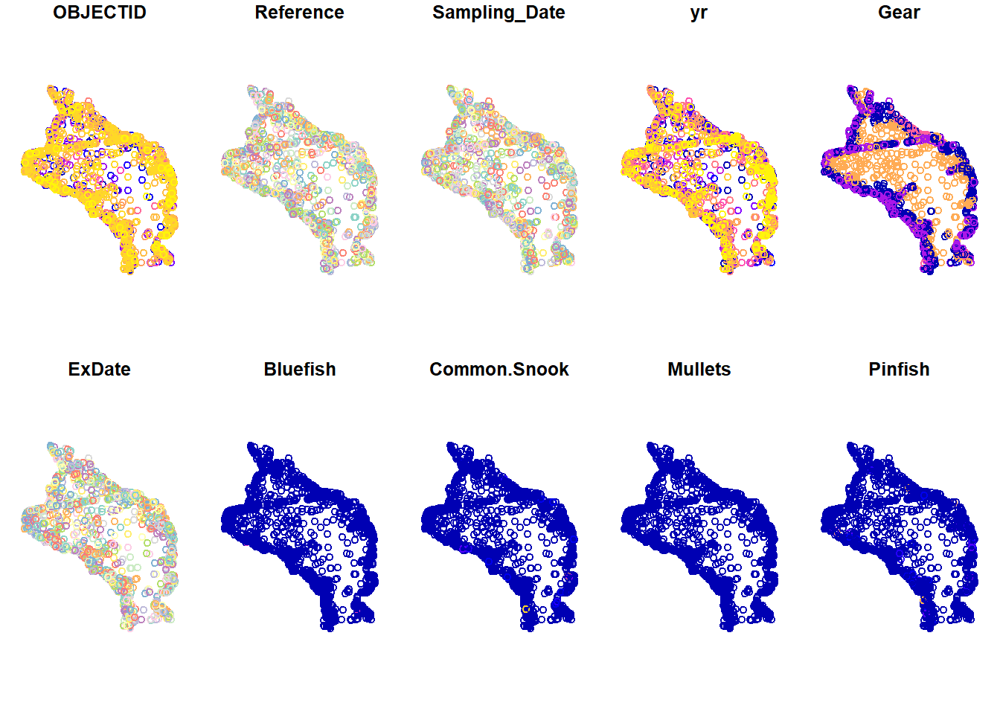
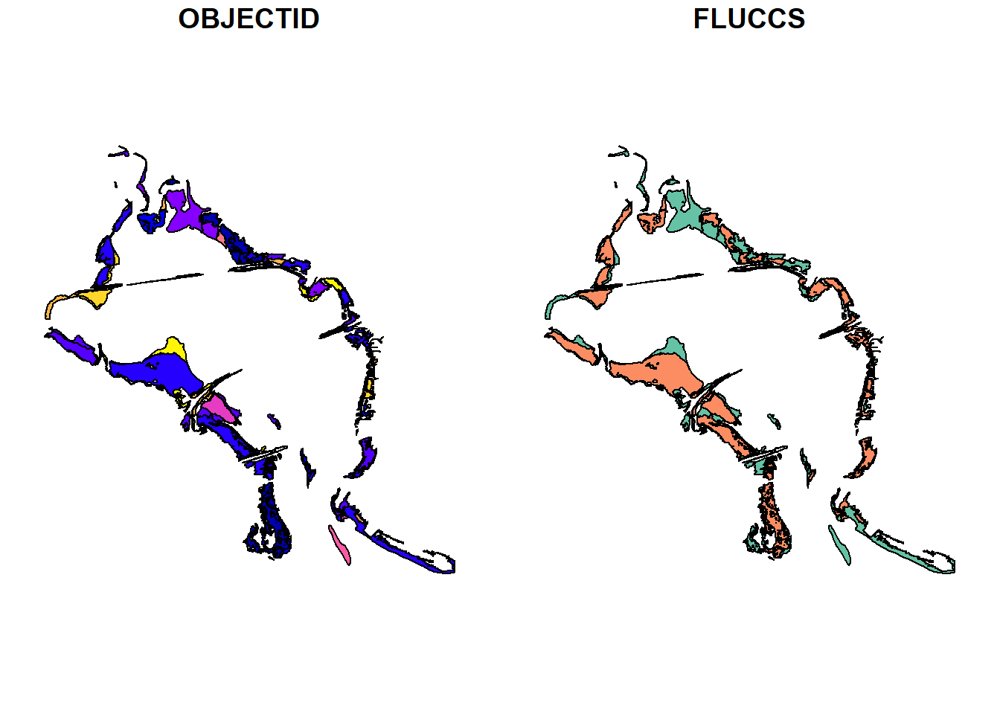
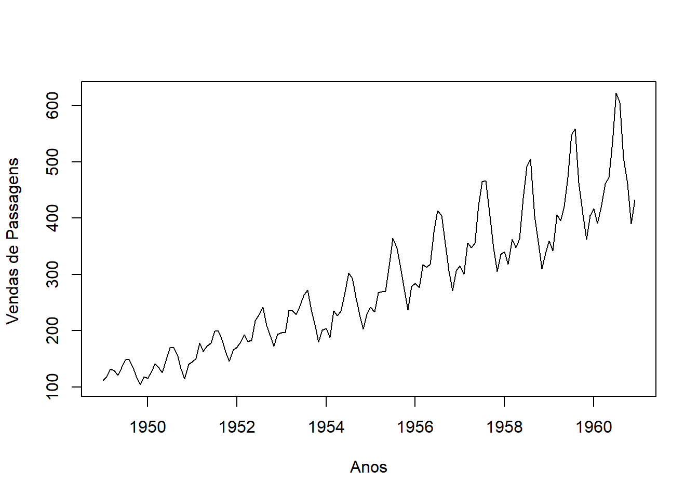
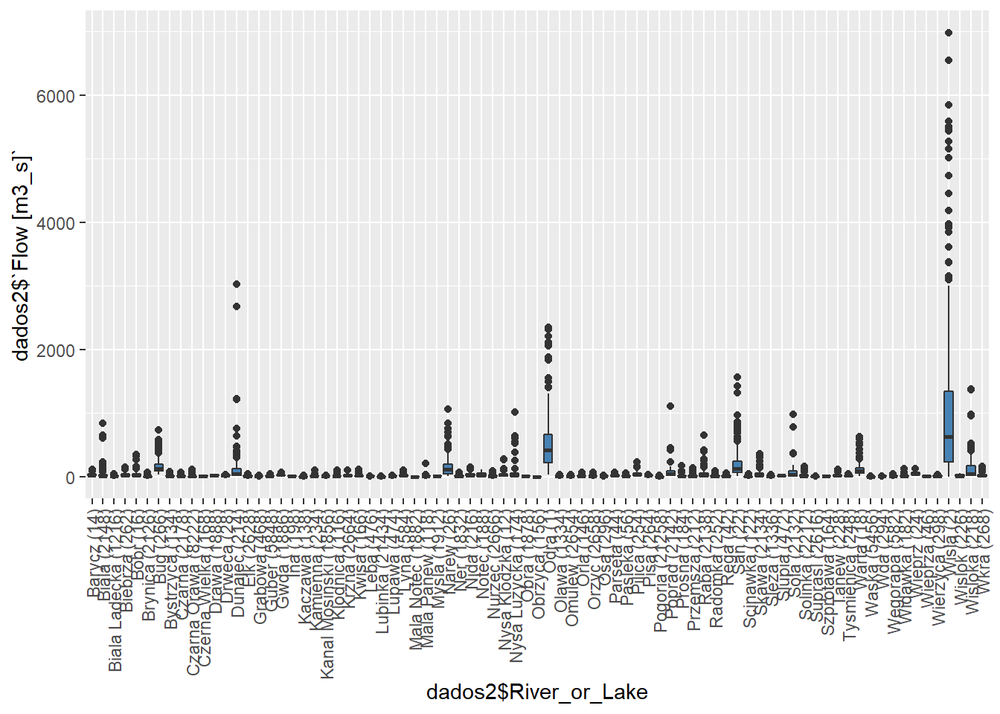
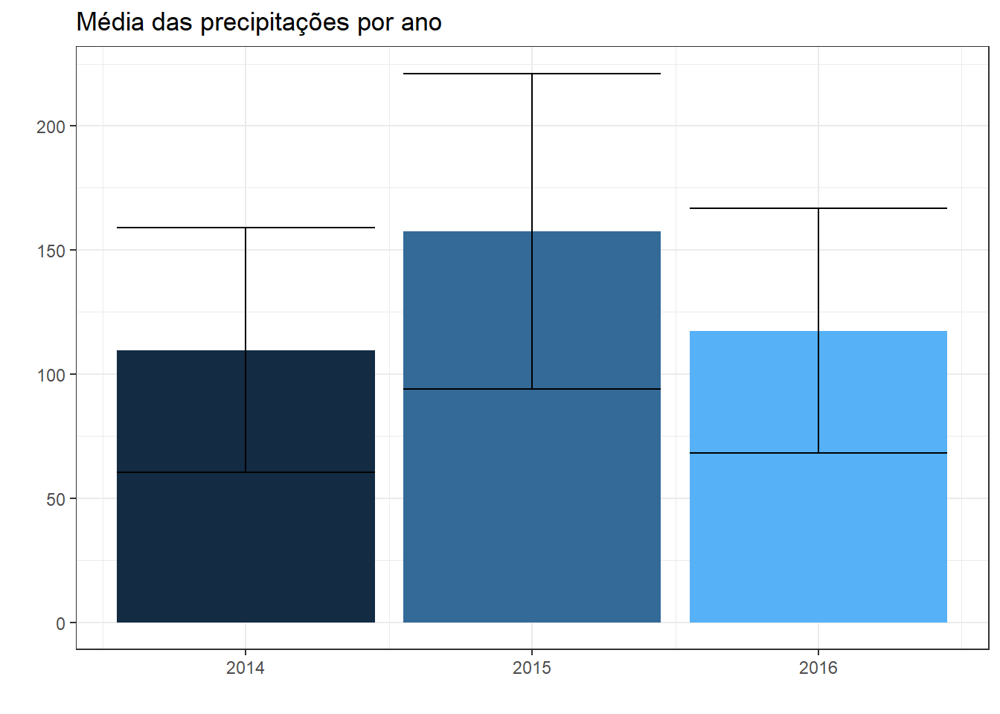

Aplicação
Para a aplicação, será realizado o exemplo do capítulo 4 do livro de BARROS et.al (2017). Será utilizada como database a série temporal de vendas de passagens aéreas nos EUA de janeiro de 1949 a dezembro de 1960.
options(repos = list(CRAN="http://cran.rstudio.com/"))
options("install.lock"=FALSE)
install.packages(c('rlang','tidyverse'))## Installing packages into 'C:/Users/wesle/Documents/R/win-library/4.1'
## (as 'lib' is unspecified)## package 'rlang' successfully unpacked and MD5 sums checked## Warning: cannot remove prior installation of package 'rlang'## package 'tidyverse' successfully unpacked and MD5 sums checked
##
## The downloaded binary packages are in
## C:\Users\wesle\AppData\Local\Temp\RtmpuuYIqj\downloaded_packages# Intalando pacotes necessários
install.packages("BETS")## Installing package into 'C:/Users/wesle/Documents/R/win-library/4.1'
## (as 'lib' is unspecified)## also installing the dependencies 'lmtest', 'urca', 'forecast'## package 'lmtest' successfully unpacked and MD5 sums checked
## package 'urca' successfully unpacked and MD5 sums checked
## package 'forecast' successfully unpacked and MD5 sums checked
## package 'BETS' successfully unpacked and MD5 sums checked
##
## The downloaded binary packages are in
## C:\Users\wesle\AppData\Local\Temp\RtmpuuYIqj\downloaded_packages install.packages("urca")## Installing package into 'C:/Users/wesle/Documents/R/win-library/4.1'
## (as 'lib' is unspecified)## package 'urca' successfully unpacked and MD5 sums checked
##
## The downloaded binary packages are in
## C:\Users\wesle\AppData\Local\Temp\RtmpuuYIqj\downloaded_packages install.packages("TSA")## Installing package into 'C:/Users/wesle/Documents/R/win-library/4.1'
## (as 'lib' is unspecified)## package 'TSA' successfully unpacked and MD5 sums checked
##
## The downloaded binary packages are in
## C:\Users\wesle\AppData\Local\Temp\RtmpuuYIqj\downloaded_packages install.packages("forecast")## Installing package into 'C:/Users/wesle/Documents/R/win-library/4.1'
## (as 'lib' is unspecified)## package 'forecast' successfully unpacked and MD5 sums checked
##
## The downloaded binary packages are in
## C:\Users\wesle\AppData\Local\Temp\RtmpuuYIqj\downloaded_packages install.packages("lmtest")## Installing package into 'C:/Users/wesle/Documents/R/win-library/4.1'
## (as 'lib' is unspecified)## package 'lmtest' successfully unpacked and MD5 sums checked
##
## The downloaded binary packages are in
## C:\Users\wesle\AppData\Local\Temp\RtmpuuYIqj\downloaded_packages install.packages("normtest")## Installing package into 'C:/Users/wesle/Documents/R/win-library/4.1'
## (as 'lib' is unspecified)## Warning: package 'normtest' is not available for this version of R
##
## A version of this package for your version of R might be available elsewhere,
## see the ideas at
## https://cran.r-project.org/doc/manuals/r-patched/R-admin.html#Installing-packages install.packages("FinTS")## Installing package into 'C:/Users/wesle/Documents/R/win-library/4.1'
## (as 'lib' is unspecified)## package 'FinTS' successfully unpacked and MD5 sums checked
##
## The downloaded binary packages are in
## C:\Users\wesle\AppData\Local\Temp\RtmpuuYIqj\downloaded_packages install.packages("xlsx")## Installing package into 'C:/Users/wesle/Documents/R/win-library/4.1'
## (as 'lib' is unspecified)## package 'xlsx' successfully unpacked and MD5 sums checked
##
## The downloaded binary packages are in
## C:\Users\wesle\AppData\Local\Temp\RtmpuuYIqj\downloaded_packages# Carregando a série temporal
data(AirPassengers)
# Análise gráfica
ts.plot(AirPassengers, ylab = "Vendas de Passagens ", xlab = "Anos") A partir do gráfico é possível perceber que existe uma tendência de aumento nas vendas de passagens. Em relação à variância, verifica-se que a distância entre os meses de maior e menor venda está aumentando, indicando uma variância não constante. Além de haver oscilações que se repetem anualmente, dando indícios de presença de sazonalidade, que será analisada mensalmente abaixo:
monthplot(AirPassengers,ylab = "Vendas de Passagens ", xlab = "Meses")
No gráfico acima, os traços horizontais representam a média, a qual aumenta nos meses de férias dos EUA (Junho, Julho e Agosto). Pelos traços verticais e sua inclinação positiva, é possível verificar um aumento constante na venda de passagens ao longo dos anos. Ambos trazem indícios da não estacionariedade da série temporal.
Conforma comentado ao longo do capítulo, a série temporal é composta por quatro componentes não observáveis e estas serão analisadas a seguir com a função decompose().
plot(decompose(AirPassengers)) A partir da figura acima, verifica-se que a série temporal é fortemente afetada pela tendência (trend), além da sazonalidade (seasonal). Sobra, ainda, a componente aleatória que é levemente “contaminada” pela componente sazonal, como é possível verificar na comparação entre random e seasonal no gráfico.
Conforme citado anteriormente, as análises gráficas dão indícios de não estacionariedade. Portanto, a estacionariedade será testada com significância estatística nas partes não sazonal e sazonal da série temporal. Para isso, serão realizados os seguintes passos: 1) análise gráfica; 2) análise da média e variância em diferentes períodos de tempo; 3) análise da Função de Autocorrelação (FAC) 4) testes de raiz unitária.
- Parte não sazonal A identificação da autocorrelação entre o valor atual e suas defasagens (lags) é feita abaixo. O intervalo de confiança (de 95%) são as linhas pontilhadas vermelhas e valores acima ou abaixo da linha são estatisticamente significantes. Portanto, existe autocorrelação significativa até o lag 36.
require(BETS)## Loading required package: BETS## Warning: package 'BETS' was built under R version 4.1.3## Registered S3 method overwritten by 'quantmod':
## method from
## as.zoo.data.frame zoo##
## Attaching package: 'BETS'## The following object is masked from 'package:stats':
##
## predict BETS::corrgram(AirPassengers, lag.max = 36, ci=0.95)Existem três formas de realizar o teste ADF: raiz unitária + constante + tendência determinística escolhe-se ‘type=“trend”’; raiz unitária + constante, type = "dryft"; raiz unitária, type= "none". No teste de raiz unitária, a hipótese nula é que a série temporal possui uma raiz unitária (ST é não estacionária) e a hipótese alternativa é que a série é estacionária.
Considerando a série temporal como sem tendência, com variância constante e com o critério de informação sendo o AIC:
adf.drift <- urca::ur.df(y=AirPassengers, type= "drift", lag=24, selectlags="AIC")
BETS::corrgram(adf.drift@res, lag.max=36)
# Estatística de teste
adf.drift@teststat ## tau2 phi1
## statistic 1.85818 7.914366 adf.drift@cval #valores tabulados por MacKinnon (1996)## 1pct 5pct 10pct
## tau2 -3.46 -2.88 -2.57
## phi1 6.52 4.63 3.81 summary(adf.drift)## Length Class Mode
## 1 ur.df S4A partir do gráfico, é possível afirmar que a estatística teste (\(\tau^2=1,8582\)) é maior do que o valor máximo associado ao nível de confiança (-2,88). Portanto, a hipótese nula não é rejeitada e é possível concluir que a série temporal não é estacionária e, portanto, possui raiz unitária. Agora precisamos descobrir o número de diferenciações necessárias para torná-la estacionária.
Inicialmente, será realizada uma diferenciação para verificar se torna a série estacionária:
ts.plot(diff(AirPassengers, lag=1, differences=1))
BETS::corrgram(diff(AirPassengers, lag=1, differences=1), lag.max=36)Com uma diferenciação é possível verificar que a série está estacionária na média. Porém, a ST está crescendo ao longo do tempo e, dessa forma, sua variância não está constante. Uma estratégia importante para tornar a variância constante, é aplicar log na série temporal. É o que será feito:
ts.plot(diff(log(AirPassengers), lag=1, differences=1))
BETS::corrgram(diff(log(AirPassengers), lag=1, differences=1), lag.max=48)Agora, a parte não sazonal da série temporal é estacionária.
- Parte sazonal
Pela FAC acima, é possível verificar que nos lags sazonais (12, 24, 36…) a função de autocorrelação apresenta um decrescimento, o que indica que a série temporal não é estacionária na parte sazonal.
Da mesma forma realizada na parte não sazonal, também será necessário realizar uma diferenciação para verificar se ela se torna estacionária. Nesse caso, o lag é modificado para 12 e, assim, é possível realizar a diferenciação na parte sazonal:
BETS::corrgram(diff(diff(log(AirPassengers), lag = 1, differences = 1), lag = 12, differences = 1), lag.max = 48)A partir da figura acima, é possível verificar que a FAC não apresenta mais o decrescimento de antes, além de ter cortes bruscos nos lags 1 e 12. Para verificar a estacionariedade, será realizado o teste de RU:
adf.drift2 <- urca::ur.df(y = diff(diff(log(AirPassengers), lag = 1), lag = 12), type = "drift", lags = 24, selectlags = "AIC")
adf.drift2@teststat # Estatística de Teste## tau2 phi1
## statistic -4.039891 8.160779 adf.drift2@cval #valores tabulados por MacKinnon (1996)## 1pct 5pct 10pct
## tau2 -3.46 -2.88 -2.57
## phi1 6.52 4.63 3.81 BETS::corrgram(adf.drift2@res, lag.max = 36)A estatística teste (\(\tau^2=-4.03891\)) é menor do que o valor máximo associado ao nível de confiança (-2,88). Portanto, conclui-se que a série é estacionária!
A partir daqui, será aplicado o método de Box & Jenkins. Para a fase de identificação será observado a FAC (Função de Autocorrelação) e FACP (Função de Autocorrelação Parcial) do modelo estacionário:
#FAC
BETS::corrgram(diff(diff(log(AirPassengers), lag = 1, differences = 1), lag = 12, differences = 1), lag.max = 48)
#FACP
BETS::corrgram(diff(diff(log(AirPassengers), lag = 1, differences = 1), lag = 12, differences = 1), type = "partial", lag.max = 48)É importante citar que o próximo passo é verificar as FAC e FACP e obter “p” e “q” nos lags 1, 2, 3… (Não-sazonal) e lags 12, 24, 36… (Sazonais). Em um primeiro cenário, como a FAC determina a ordem das médias móveis (q), é possível verificar que a última observação significativa da FAC é o lag 1, portanto, q=1. Já a FACP dá a ordem da componente autoregressiva (p). Da mesma forma que na FAC, a última observação sigificativa é a 1. Como foi realizada uma diferenciação na parte sazonal e uma na parte não sazonal, a ordem de integração é 1 (d=1). O modelo resultante seria SARIMA(1,1,1)(1,1,1).
Em um segundo cenário, a última observação significativa da FAC continua sendo o lag 1 (q=1). A ordem de integração também continua a mesma. Mas no caso da FACP, é possível visualizar um decrescimento não só na parte sazonal, como também na parte não sazonal (p=0). Portanto, o modelo seria SARIMA(0,1,1)(0,1,1).
Com esses possíveis modelos, podemos iniciar a etapa de Estimação. Será utilizada a função Arima(), em que a variável de entrada é a série temporal original. A transformação logarítmica necessária pra deixar a variância constante é garantida pelo argumento lambda = 0. A função Arima() automaticamente já diferencia a série.
library("forecast")## Warning: package 'forecast' was built under R version 4.1.3fit.air <- Arima(AirPassengers, order = c(1,1,1), seasonal = c(1,1,1), method = "ML", lambda = 0)
fit.air ## Series: AirPassengers
## ARIMA(1,1,1)(1,1,1)[12]
## Box Cox transformation: lambda= 0
##
## Coefficients:
## ar1 ma1 sar1 sma1
## 0.1668 -0.5616 -0.0994 -0.497
## s.e. 0.2458 0.2114 0.1540 0.136
##
## sigma^2 = 0.00138: log likelihood = 245.16
## AIC=-480.31 AICc=-479.83 BIC=-465.93O próximo passo é verificar se os parâmetros do modelo são significativos:
BETS::t_test(fit.air)## Coeffs Std.Errors t Crit.Values Rej.H0
## ar1 0.16679124 0.2457980 0.6785705 1.977304 FALSE
## ma1 -0.56163441 0.2114211 2.6564723 1.977304 TRUE
## sar1 -0.09938487 0.1539918 0.6453907 1.977304 FALSE
## sma1 -0.49700743 0.1360485 3.6531644 1.977304 TRUEComo o parâmetro AR (ar1) foi rejeitado porque não é sigificativo, é importante retirar o parâmetro e analisá-lo novamente. Ele será retirado colocando o parâmetro p=0.
fit.air <- Arima(AirPassengers, order=c(0,1,1), seasonal = c(0,1,1), method = "ML", lambda = 0)
fit.air## Series: AirPassengers
## ARIMA(0,1,1)(0,1,1)[12]
## Box Cox transformation: lambda= 0
##
## Coefficients:
## ma1 sma1
## -0.4018 -0.5569
## s.e. 0.0896 0.0731
##
## sigma^2 = 0.001371: log likelihood = 244.7
## AIC=-483.4 AICc=-483.21 BIC=-474.77BETS::t_test(fit.air)## Coeffs Std.Errors t Crit.Values Rej.H0
## ma1 -0.4018268 0.08964405 4.482470 1.977054 TRUE
## sma1 -0.5569466 0.07309948 7.619023 1.977054 TRUEComo todos os parâmetros do modelo \(SARIMA(0,1,1)(0,1,1)_{12}\) são significativos e os critérios de informação AIC, AICc e BIC foram minimizados, esse será o modelo escolhido para a próxima fase: o diagnóstico.
No diagnóstico, os resíduos serão testados, assim como foram testados no capítulo anterior. Serão analisados a ausência de autocorrelação linear, de heterocedasticidade condicional e normalidade. Para uma análise geral, será utilizada a função tsdiag().
diag <- tsdiag(fit.air, gof.lag = 20) A partir do gráfico Standarized Residuals, visualmente os dados aparentam ter heterocedasticidade e média zero, o que indica normalidade. Além disso, é possível verificar a existência de outliers, já que observações fora do intervalo [-3;3] seriam observações atípicas. Portanto, aparentemente não existem outliers.
A partir do gráfico Standarized Residuals, visualmente os dados aparentam ter heterocedasticidade e média zero, o que indica normalidade. Além disso, é possível verificar a existência de outliers, já que observações fora do intervalo [-3;3] seriam observações atípicas. Portanto, aparentemente não existem outliers.
A FAC dos resíduos (segundo gráfico) mostra que não há nenhuma defasagem significativa, portanto, o modelo SARIMA está representando bem a série temporal. O gráfico p-values for Ljung-Box statistic não é confiável, já que os p-values são calculados sem levar em conta o fato de os resíduos terem sido gerados a partir de um modelo ajustado. Por mais que a conclusão deste gráfico mostre que não há dependência linear entre os resíduos, a informação não é confiável.
O teste de Ljung & Box será realizado para testar a autocorrelação dos resíduos:
Box.test(fit.air$residuals, lag=24, type="Ljung-Box", fitdf = 2)##
## Box-Ljung test
##
## data: fit.air$residuals
## X-squared = 26.446, df = 22, p-value = 0.233O teste mostra a ausência de autocorrelação linear nos resíduos, já que o p-value é maior que 0.05. Portanto, a hipótese nula de que a série temporal não possui autocorrelação até o lag 24 não pode ser rejeitada.
A seguir será testada a estacionariedade da variância e, para isso, o teste Multiplicador de Lagrange para heterocedasticidade condicional autoregressiva será utilizado. Além disso, também será testada a normalidade dos resíduos com o teste de Shapiro-Wilk.
# Variância
FinTS::ArchTest(fit.air$residuals, lags=12)##
## ARCH LM-test; Null hypothesis: no ARCH effects
##
## data: fit.air$residuals
## Chi-squared = 14.859, df = 12, p-value = 0.2493#Normalidade dos resíduos
shapiro.test(fit.air$residuals)##
## Shapiro-Wilk normality test
##
## data: fit.air$residuals
## W = 0.98637, p-value = 0.1674Em relação à variância, com p-value maior que 0.05, a hipótese nula de estacionariedade da vaiância nao é rejeitada. No caso do teste de Shapiro-Wilk, verifica-se que como p-value é maior que 0.05, a hipótese nula de normalidade também não é rejeitada.
A próxima fase será a Previsão utilizando o pacote forecast(). O argumento “h” é o horizonte de previsão e o “level” é o nível de confiança. Para verificar se a previsão é adequada, serão analisadas as métricas utilizando a função accuracy.
library(forecast)
# Previsão
plot(forecast(object=fit.air, h=12, level=0.95))
# Métricas
accuracy(fit.air)## ME RMSE MAE MPE MAPE MASE
## Training set 0.05140376 10.15504 7.357555 -0.004079321 2.623637 0.2297061
## ACF1
## Training set -0.03689736Pelas métricas, o MAPE demonstra que o erro de previsão está em 0,47%, o que é muito bom. Dessa forma, conseguimos confirmar que a previsão está adequada!